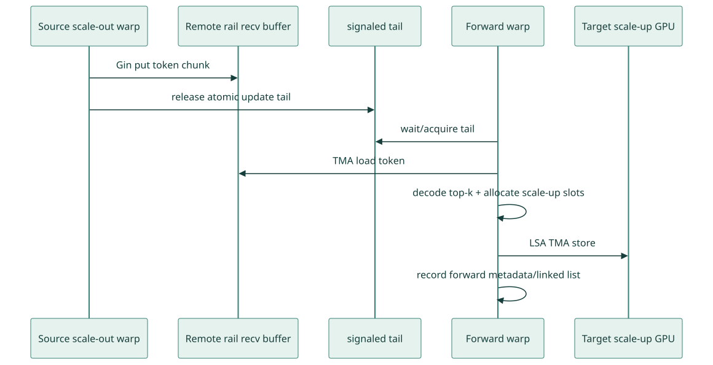
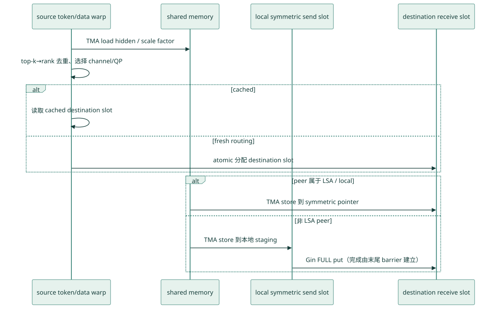
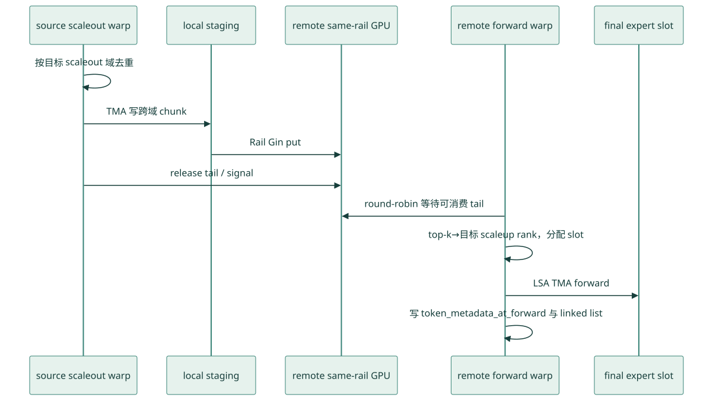

DeepEP V2 Elastic 实现详解
六篇学习目录 · NCCL Device API 与 GIN 前置教程 · HTML 阅读版
本文对应仓库中的 V2
ElasticBuffer/ elastic kernels。V2 是一次完整重构：EP 的训练吞吐与推理解码接口被统一，内核改为运行时 JIT 编译，通信后端从 NVSHMEM 切换到 NCCL Gin，并同时支持 direct 与 hybrid 两种拓扑。
研究基线：本地 tutorial/main 的教程文档提交为
f99f06868616c6fa96f83ff1caa5f0231f9ee3bc（2026-08-25）；它相对父提交只新增三篇 implementation 文档，未修改 DeepEP 源码。本文分析的实际上游源码基线是其父提交01dc3aaac82068020353dce2c302e38153c0bfaa（deepseek-ai/DeepEP的origin/main，2026-08-04）；固定源码外链时应指向deepseek-ai/DeepEP@01dc3aaa，不能使用deepseek-ai/DeepEP@f99f068。外部资料访问日期为 2026-08-26；代码行号可能随上游演进而漂移，复现时应固定上述上游源码 commit。
0. 研究基线与阅读约定
0.1 证据分级与文档边界
为避免把接口宣传、硬件背景和代码行为混在一起，本文采用三种标记：
- [源码事实]：可由上述上游源码 commit 的 Python/C++/CUDA、测试或构建脚本直接验证；
- [官方背景]：来自 DeepEP README、NVIDIA NCCL/CUDA 官方文档或论文，用于解释 API 与硬件语义；
- [源码推导]：根据当前实现的数据布局、同步顺序或性能计数推导出的结论，尚不是稳定 API 承诺。
**源码摘录约定：**每个机制都给出项目内文件、符号或行号链接。代码块中的
// ...、/* ... */只压缩与当前知识点无关的参数、循环或字段，不能脱离链接指向的完整源码直接编译；凡是教学伪代码都会明确标注“伪代码”，未标注者均保持真实控制分支和变量语义。
根目录新增的三份深挖稿只覆盖 V1，可帮助理解 NVSHMEM、IBGDA、SM/warp 分工等历史背景，但不能用来证明 V2 行为。V2 的结论以 deep_ep/buffers/elastic.py、csrc/elastic、deep_ep/include/deep_ep、tests/elastic、仓库 README 以及 NCCL/CUDA 官方资料为准。
0.2 “Elastic” 到底指什么
[源码事实] ElasticBuffer 的注释把 elastic 定义为底层内存形态的灵活性：纯 GPU、CPU 或混合内存。当前 EP 主路径使用 GPU symmetric segment；CPU/mixed segment 已用于 Engram，README 仍把通用 elastic GPU/CPU buffer 列为进行中能力。
这里的 elastic 不是分布式系统意义上的运行时成员弹性：当前实现没有在线增删 rank、communicator shrink/grow、故障重建或故障转移协议。构造阶段固定 ProcessGroup、NCCL communicator、world/LSA/Rail team 和窗口；运行期间所有 rank 仍需以一致顺序参与相应 collective、window registration、barrier 与 EP 调用。
源码跟读。 定义就在 ElasticBuffer 类注释，构造函数则把“固定成员关系”和“内存形态”分成了两组参数：
# deep_ep/buffers/elastic.py:228-245（节选）
def __init__(self,
group: dist.ProcessGroup,
num_bytes: Optional[int] = None,
num_cpu_bytes: int = 0,
...,
allow_hybrid_mode: bool = True,
allow_multiple_reduction: bool = True,
...):group在构造时给出，随后由group.rank()、group.size()固定 rank/world；源码没有更新它的接口。num_bytes/num_cpu_bytes决定注册窗口中 GPU、CPU 两种物理 segment 的容量，这才是当前代码中 “elastic” 的落点。allow_hybrid_mode改的是逻辑拓扑和 FULL/RAIL 连接方式，不改变 communicator 成员。allow_multiple_reduction改的是 combine 的 buffer plane 与规约时机，也不是 rank 弹性。
构造末尾 elastic.py:344-367 创建 C++ runtime、读取固定 logical/physical domain，然后执行 CUDA/进程组同步。这解释了为什么不同 rank 必须以相同构造顺序和相同窗口大小进入初始化。
0.3 V2 与 IBGDA 的精确边界：不用 NVSHMEM，但可能由 GDAKI 承载 GIN
先给结论：V2 没有调用 NVSHMEM，也没有 V1 的 NVSHMEM-IBGDA transport；V2 调用的是 NCCL Device API 的 GIN。 但 GIN 是统一接口，不是单一硬件后端：NCCL 可把它实现为 GPU Direct NIC 的 GDAKI backend，也可实现为 CPU Proxy backend。因此下面三句话不能混用：
- “V2 不使用 NVSHMEM IBGDA”——正确；
- “V2 使用 NCCL GIN”——正确；
- “V2 一定完全不经过 IBGDA/GDAKI”——错误，实际 backend 由 NCCL 查询结果和运行环境决定。
csrc/kernels/backend/nccl.cu:82-99 是 transport 选择的源码证据：
ncclCommProperties props = NCCL_COMM_PROPERTIES_INITIALIZER;
ncclCommQueryProperties(comm, &props);
if (num_ranks > 1 && get_env("EP_DISABLE_GIN", 0) == 0) {
EP_HOST_ASSERT((allow_hybrid_mode ? props.railedGinType : props.ginType)
!= NCCL_GIN_TYPE_NONE);
reqs.ginContextCount = num_allocated_qps;
reqs.ginExclusiveContexts = true;
reqs.ginConnectionType = allow_hybrid_mode
? NCCL_GIN_CONNECTION_RAIL : NCCL_GIN_CONNECTION_FULL;
}逐行解释：
ncclCommQueryProperties查询 NCCL 已选择/可提供的能力；DeepEP 只检查ginType或railedGinType是否为NONE，没有断言它必须等于 GDAKI。- direct 需要任意 peer 可达的
FULLconnection；hybrid 只沿同 rail 跨 scale-out 通信，申请RAILconnection。 ginContextCount对应预分配 QP/context 数，ginExclusiveContexts=true表示这些 context 不和别的 device operation 共享。EP_DISABLE_GIN=1只是跳过 GIN requirement 的建立；代码里没有另一套跨节点 transport 自动接管，因此不能把它当成多节点 fallback 开关。
数据路径只看到统一的 handle::NCCLGin::put：它把目标地址编码为 window + offset 后调用 gin.put(...)；内核不直接构造 NVSHMEM WQE。源码中个别注释仍写 “IBGDA requests”，例如 hybrid_dispatch.cuh:444-454，这是沿用 GPU-initiated RDMA 的历史术语，不能推翻实际 API 层是 NCCL GIN 的事实。
还要保留一个当前实现边界：common/comm.cuh:166-176 为了实现带 timeout 的 barrier signal polling，直接把 gin._ginHandle 转成 ncclGinGdakiGPUContext* 并读取 signals_table.buffer：
// TODO(NCCL): wait for an official signal-wait API with timeout
const auto gdaki =
static_cast<ncclGinGdakiGPUContext*>(gin._ginHandle) + gin.contextId;
const auto signal_ptr =
reinterpret_cast<uint64_t*>(gdaki->signals_table.buffer) + signal_idx;
const auto signal = ptx::ld_acquire_sys<uint64_t>(signal_ptr);所以从接口设计上说 GIN 可为 GDAKI 或 Proxy；从本 commit 的完整可运行路径说，至少这个自定义 barrier 轮询仍耦合 GDAKI 内部结构。在声称 Proxy backend 可端到端运行前，必须逐路径验证 barrier、PP 等 signal wait，而不能只看 props.ginType != NONE。
1. V2 解决了什么问题
相对 V1，V2 的主要目标是：
- 用更少通信 SM 达到相同或更高吞吐；
- 扩展更大的 scale-up/scale-out 域，README 给出的目标上限为 EP2048；
- 去掉 V1 的静态 config 表和集群 auto-tuning，改为解析估算 SM 与 QP；
- 统一 high-throughput 与 low-latency 的 Python API；
- 用 NCCL Gin 复用 NCCL communicator、symmetric window 和 GPU-initiated networking；
- 使用固定最大容量、cached handle、可选 CPU sync，使同一实现覆盖训练、prefill 和 decode；
- 用新的 expanded/GEMM 布局直接服务 grouped GEMM；
- 以两阶段通信/规约 epilogue 降低主通信内核的 SM 占用。
需要特别说明：V2 不再提供 V1 那种“0 SM RDMA low-latency + recv hook”路径。 V2 所谓 high-throughput/low-latency API 统一，是用同一 dispatch/combine 通过 cached handle、固定上界、较少 SM 等模式覆盖不同工作负载，不是保留了 V1 LL 的纯后台 RDMA hook 协议。
2. V1 与 V2 的核心对照
| 维度 | V1 normal | V1 low-latency | V2 Elastic |
|---|---|---|---|
| Python 对象 | Buffer |
Buffer(low_latency_mode=True) |
ElasticBuffer |
| 后端 | CUDA IPC + NVSHMEM IBGDA | NVSHMEM IBGDA | NCCL device API + NCCL Gin |
| 编译 | legacy CUDA 扩展 | legacy CUDA 扩展 | kernel runtime JIT |
| 路由统计 | 独立 layout + notify | 融合到 LL kernel | notify warps 融合进 dispatch |
| 输出分配 | 默认 CPU exact-count | 固定最大容量 | do_cpu_sync=True/False 可选 |
| cached routing | tuple handle | 固定 LL handle | 具名 EPHandle |
| 拓扑 | 单机 direct；多机固定 8-GPU 层次 | 全 rank RDMA | direct 或 hybrid，逻辑域来自 NCCL 拓扑 |
| SM/QP | 静态 config + 调优 | 隐式 | 解析估算，可覆盖 |
| GEMM 布局 | token-major | expert-major 固定槽 | normal 或 do_expand expert 布局 |
| 附加能力 | EP | EP | EP、Engram、PP、AGRS、barrier |
3. 代码分层
| 层次 | 关键文件 | 责任 |
|---|---|---|
| Python API | deep_ep/buffers/elastic.py |
ElasticBuffer、EPHandle、SM/QP 估算、模式参数、确定性排序 |
| C++ 编排 | csrc/elastic/buffer.hpp |
symmetric buffer、workspace、stream、输出/handle 分配、dispatch/combine 两阶段 launch |
| JIT 主机 launch | csrc/kernels/elastic/dispatch.hpp、combine.hpp |
生成模板实例、编译缓存、kernel launch 参数 |
| Direct kernel | deep_ep/include/deep_ep/impls/dispatch.cuh、combine.cuh |
单逻辑域直接通信 |
| Hybrid kernel | hybrid_dispatch.cuh、hybrid_combine.cuh |
scale-out RDMA + scale-up NVLink 的分层通信 |
| Epilogue | dispatch_copy_epilogue.cuh、combine_reduce_epilogue.cuh |
buffer→用户输出、expanded layout、最终规约/bias |
| 公共布局 | common/layout.cuh |
TokenLayout、BufferLayout、WorkspaceLayout |
| 通信原语 | common/comm.cuh |
QP 映射、NVLink/Gin barrier、timeout |
| Gin handle | common/handle.cuh |
symmetric ptr、put、reduce、flush 封装 |
| NCCL backend | csrc/kernels/backend/nccl.cu |
communicator 属性、Gin context/QP、logical/physical topology |
| 对称内存 | csrc/kernels/backend/symmetric.hpp |
GPU/CPU symmetric VA 与 window memory |
| JIT runtime | csrc/jit |
生成模板源码、递归依赖 hash、NVCC 编译、缓存和 launch |
| 测试 | tests/elastic/test_ep.py |
direct/hybrid、expand、cached、no-CPU-sync、确定性和性能 |
总调用链：

查看 Mermaid 图源码
flowchart TD
A[Python ElasticBuffer.dispatch/combine] --> B[PyBind C++ ElasticBuffer]
B --> C[launch_dispatch / launch_combine]
C --> D[JIT runtime 生成模板实例]
D --> E{逻辑 scaleout ranks > 1?}
E -- 否 --> F[direct dispatch/combine kernel]
E -- 是 --> G[hybrid dispatch/combine kernel]
F --> H[NCCL device API / Gin / symmetric window]
G --> H
F --> I[copy/reduce epilogue]
G --> I
I --> J[PyTorch output + EPHandle + EventOverlap]4. 物理域与逻辑域
V2 不再把“每节点恰好 8 卡”硬编码到 EP 算法。NCCL backend 查询：
num_rdma_ranks = world_size / LSA_size：LSA 域的数量，也是代码中的逻辑 scale-out 维度；它不是 NIC/HCA/QP 的物理数量；num_nvl_ranks：NCCL LSA team 的 NVLink 域大小。
然后依据 allow_hybrid_mode 构造逻辑域：
hybrid=True:
num_scaleout_ranks = num_rdma_ranks
num_scaleup_ranks = num_nvl_ranks
rank = scaleout_rank * num_scaleup_ranks + scaleup_rank
hybrid=False:
num_scaleout_ranks = 1
num_scaleup_ranks = total_num_ranks4.1 Direct 模式
num_scaleout_ranks == 1。所有 peer 处于一个逻辑 scale-up 域：
- NVLink 可达 peer：通过 LSA symmetric pointer 和 TMA store 直接写；
- 不可 NVLink 直达 peer：先写 local send buffer，再用 Gin put 发 RDMA；
- 每个 token 直接到最终目标 rank，不使用中间 forwarder。
适合：单节点、较小 EP 域、网络允许全连接 Gin、希望结构简单的场景。
4.2 Hybrid 模式
num_scaleout_ranks > 1，通信拆成：
Scale-out: NCCL Rail team / Gin RDMA
Scale-up : NCCL LSA team / NVLink symmetric store查看 Mermaid 图源码
flowchart LR
A[源 scaleout s0 / scaleup u0] -->|Rail Gin RDMA| B[目标 scaleout s1 / 同 rail u0]
B -->|LSA NVLink forward| C[目标 scaleout s1 / scaleup u1]
C --> D[最终 expert buffer]hybrid 对 multi-rail/multi-plane 网络更友好：每个本地 GPU 沿对应 rail 做跨节点传输，然后节点内再分发。
4.3 is_scaleup_nvlink
is_scaleup_nvlink = num_scaleup_ranks == num_nvl_ranks它决定 direct kernel 的 team_t 和数据写法。如果整个逻辑 scale-up 域就是物理 NVLink 域，可直接使用 LSA pointer；否则 kernel 同时判断 NVLink bypass 和 Gin RDMA。
5. NCCL Gin 后端
5.1 初始化
NCCLSymmetricMemoryContext 使用已有 NCCL communicator 创建 device communicator，并请求：
ginContextCount = num_allocated_qps；- exclusive Gin contexts；
- 固定 Gin queue depth；
- traffic class/service level；
- barrier 所需 signal；
- hybrid 用
NCCL_GIN_CONNECTION_RAIL； - direct 用
NCCL_GIN_CONNECTION_FULL。
若 EP rank 数大于 1 且未设置 EP_DISABLE_GIN=1，Gin 不可用会直接报错。EP_DISABLE_GIN=1 只对不需要跨节点 Gin 的 LSA-only/单节点路径有明确意义；[源码推导] 当前 elastic EP 没有另一套通用跨节点 transport 可自动替代 Gin，不能把它理解成“跨节点自动 fallback”。
5.2 对称窗口
C++ 统一布局：
[[[Workspace] GPU buffer] CPU buffer]- workspace 固定在 GPU segment 前部，按 2 MiB 对齐；
- EP buffer 位于 workspace 后；
- 可选 CPU segment 位于尾部，供 Engram 等远端存储；
- NCCL window 注册整个 symmetric address space；
- 每个 rank 在相同 offset 上拥有同构布局，Gin 只需目标 rank + offset 即可寻址。
5.3 GPU/CPU 混合对称内存
HybridElasticSymmetricMemory 可把：
[local GPU VRAM][local-node CPU rank0 segment][CPU rank1 segment]...连续映射到一个 VA 空间。CPU segment 通过 POSIX FD 交换和 CUDA VMM 导入。当前 EP 主缓冲使用 GPU segment，mixed segment 已实际支撑 Engram；README 所说通用、透明的 GPU+CPU elastic buffer 仍属于 roadmap。
6. ElasticBuffer 初始化
6.1 两种大小指定方式
直接指定：
buffer = deep_ep.ElasticBuffer(group, num_bytes=..., num_cpu_bytes=...)按 MoE 参数计算：
buffer = deep_ep.ElasticBuffer(
group,
num_max_tokens_per_rank=max_tokens,
hidden=hidden,
num_topk=topk,
use_fp8_dispatch=True,
)calculate_elastic_buffer_size() 同时计算 dispatch 和 combine 的最坏布局，取最大值并按 2 MiB 对齐。V2 buffer 通常比 V1 大，因为它更多采用固定上界布局，减少复杂有界 queue 和运行时流控。
6.2 Direct 的 buffer 估算
dispatch：
recv_buffer: R * max_tokens
send_buffer: NVLink-only 时可为 0 rank；否则 1 * max_tokenscombine：
recv_buffer token planes:
allow_multiple_reduction=True -> min(R, K)
False -> K
send_buffer:
NVLink-only 可省略；否则按 rank/expanded 最坏规模分配6.3 Hybrid 的 buffer 估算
dispatch 需要：
scaleup_recv_buffer
scaleout_send_buffer
scaleout_recv_buffer（按 channel 固定上界）combine 需要对应的 scale-up/scale-out reduce 和 send buffer。所有布局复用 TokenLayout，token 内可包含 hidden、scale factor、top-k、source metadata 和同步字段。
7. JIT 编译机制
V2 kernel 的模板参数包含：
拓扑大小、SM 数、warp 数、QP 数、hidden bytes、top-k、expert 数、
max tokens、alignment、FP8 scale pack、cached/CPU-sync/expand 模式等提前编译全部组合会产生巨大二进制。V2 的 launch runtime 在第一次遇到某组参数时：
- 生成只实例化该模板组合的 CUDA 源；
- 解析所需 include；
- 调 NVCC 编译；
- 加载 cubin/module；
- 以参数 hash 缓存；
- 后续调用直接复用。
生成端的实际代码（launch_runtime.hpp:33-45）：
auto code = Derived::generate_impl(args);
static std::string include_hash;
if (include_hash.empty())
include_hash = include_parser->get_hash_value(code);
code = fmt::format("// Includes' hash value: {}\n{}",
include_hash, code);generate_impl(args) 把 topology、SM/warp/QP、shape 与模式布尔量写进唯一模板实例；递归 <deep_ep/*> include hash 让头文件变化进入缓存签名。编译缓存的关键代码（compiler.hpp:111-159）：
const auto kernel_signature =
fmt::format("{}$${}$${}$${}", name, signature, flags, code);
const auto dir_path = cache_dir_path / "cache" /
fmt::format("kernel.{}.{}", name,
get_hex_digest(kernel_signature));
if (const auto runtime = kernel_runtime_cache->get(dir_path);
runtime != nullptr)
return runtime;
compile(code, tmp_dir_path, tmp_cubin_path);
fsync_dir(tmp_dir_path);
std::filesystem::rename(tmp_dir_path, dir_path, error_code);
return kernel_runtime_cache->get(dir_path);临时目录 + fsync + directory rename 使多个 rank 并发首编译时只复用胜者的完整目录，避免读到半写入 CUBIN；signature 同时覆盖 kernel 名、NVCC 版本/flags 和生成源码。
相关环境变量：
EP_JIT_CACHE_DIR：缓存目录；EP_JIT_DEBUG：调试输出；EP_JIT_PRINT_COMPILER_COMMAND：打印 NVCC 命令；EP_JIT_PTXAS_VERBOSE/CHECK：寄存器/本地内存检查；EP_JIT_DUMP_PTX/SASS/ASM：导出汇编；EP_JIT_WITH_LINEINFO：profiling 行号。
代价是首轮新 shape/mode 有编译延迟；生产系统应在 warm-up 阶段覆盖实际组合。
8. V2 Dispatch 总流程

查看 Mermaid 图源码
flowchart TD
A[检查 x/sf/topk/handle] --> B[自动或手动决定 num_sms/num_qps]
B --> C[准备 stream 依赖]
C --> D[分配或复用 prefix、slot、metadata]
D --> E[清 host workspace counters]
E --> F[launch_dispatch: notify + communication]
F --> G{cached?}
G -- 是 --> H[复用 handle 中接收规模]
G -- 否 --> I{do_cpu_sync?}
I -- 是 --> J[CPU 轮询 mapped host counts]
I -- 否 --> K[按 worst case 分配]
H --> L[分配 recv_x/sf/topk/metadata]
J --> L
K --> L
L --> M[launch_dispatch_copy_epilogue]
M --> N[构造 EPHandle 与 EventOverlap]与 V1 的关键不同：路由统计不再是独立 get_dispatch_layout API；notify warps 与数据 warps 在同一个 dispatch kernel 中协作。
9. Notify Warps：统计、交换与 prefix
Direct 和 hybrid dispatch 的前若干 warp 是 notify warps，主要工作相同：
- 在 shared memory 统计本 rank 的
rank_count和expert_count； - rank 计数对同一 token 的相同目标 rank 去重，expert 计数不去重；
- 各 SM 将
(到达标记, count)原子累加到全局 reduction workspace； - SM0 等待所有 SM 完成，汇总计数；
- 把 rank/expert counts 写给 peer；
- 等待本 rank 应接收的计数到齐；
- 对 local expert 应用
expert_alignment； - 生成：
psum_num_recv_tokens_per_scaleup_rank；psum_num_recv_tokens_per_expert；num_unaligned_recv_tokens_per_expert；
do_cpu_sync=True时把编码后的计数写到 mapped host workspace。
计数使用正数编码协议区分“0 token 已准备”和“尚未写入”。等待处均带 GPU timeout 和 rank/channel 诊断。
10. Direct Dispatch 内核
dispatch_impl 的每个数据 warp 被视为一个 channel。
10.1 每个 token 的处理

查看 Mermaid 图源码
flowchart TD
A[TMA load hidden 到 shared token buffer] --> B[cp.async/TMA load scale]
B --> C[读取 topk_idx/weights]
C --> D[写 source global token index]
D --> E[按目标 rank 去重]
E --> F{cached slot?}
F -- 否 --> G[atomicAdd 分配 dst slot并写 dst_buffer_slot_idx]
F -- 是 --> H[复用 handle slot]
G --> I{目标 NVLink 可达?}
H --> I
I -- 是 --> J[TMA store 到目标 symmetric recv buffer]
I -- 否 --> K[TMA store 到本地 send buffer]
K --> L[Gin put 到目标 recv buffer]
J --> M[下一 token]
L --> M10.2 Source global index
每个 token 写入：
src_token_global_idx = rank_idx * num_max_tokens_per_rank + token_idx它同时编码源 rank 与源 token index，combine 可用除法/取模恢复，不必携带两个独立字段。
10.3 Cached slot
首次 dispatch 对每个 (token, top-k) 保存目标 buffer slot。cached dispatch 直接读取：
dst_buffer_slot_idx[token, topk]并复用已知接收规模和 source metadata，从而跳过 slot 原子分配与 CPU sync。适合 decode 中 routing 不变或 backward 中沿同一路由传梯度。
10.4 完成屏障
所有 payload 发出后调用统一 GPU barrier：
- flush Gin QP；
- NVLink 路径做 system-scope 可见性 fence；
- 向 team peers 发 signal；
- 等待 peer signal；
- 触发 programmatic dependent launch，使 copy epilogue 可及时开始。
11. Hybrid Dispatch 内核
hybrid_dispatch_impl 把 warps 分成三类：
| warp 角色 | 作用 |
|---|---|
| notify warps | 全局 rank/expert 统计、跨 scale-out/scale-up 归并、prefix |
| scale-out warps | 将源 token 通过 Rail Gin 发到目标 scale-out 域的同 rail GPU |
| forward warps | 消费 scale-out recv buffer，在目标节点内按 top-k 转发到 scale-up peer |
11.1 Scale-out warp
- 一个 warp 是一个 channel；token 按 channel 固定分片。
- token 先 TMA 写 local scaleout send buffer。
- 根据 top-k 目标的 scale-out rank 去重；同一目标节点只发一份 token。
- 通过
ncclTeamTagRailGin put 发送到对端同 rail 的scaleout_recv_buffer。 - 每处理若干 token，以 release atomic 批量更新对端 channel tail；最后附 finish flag。
11.2 Forward warp
- 对各 scale-out 来源做 round-robin，等待
signaled_tail推进或 finish。 - 从 scaleout recv buffer TMA load token。
- 读取 top-k，转换为目标 scale-up rank。
- 对目标 scale-up rank 去重并 atomic 分配 slot。
- 用 LSA symmetric pointer + TMA store 写目标 GPU 的 scaleup buffer。
- 记录
token_metadata_at_forward和channel_linked_list，供 cached dispatch 与 combine replay。

查看 Mermaid 图源码
sequenceDiagram
participant S as Source scale-out warp
participant R as Remote rail recv buffer
participant T as signaled tail
participant F as Forward warp
participant U as Target scale-up GPU
S->>R: Gin put token chunk
S->>T: release atomic update tail
F->>T: wait/acquire tail
F->>R: TMA load token
F->>F: decode top-k + allocate scale-up slots
F->>U: LSA TMA store
F->>F: record forward metadata/linked list11.3 Hybrid 元数据
dst_buffer_slot_idx 形状为：
[num_channels, num_scaleout_ranks, max_tokens_per_channel, num_topk]token_metadata_at_forward[channel, forwarded_token, :] 包含：
0: source global token index（含 source scale-out rank）
1: 是否是 chunk 最后一个 token
2 .. 2+K-1: 目标 scale-up rank
2+K .. 2+2K-1: 对应目标 slotchannel_linked_list 则按 channel 和 scale-up peer 保存 combine 输入 token 的链式顺序。combine 不必重新推导 dispatch 的到达顺序，可直接 replay。
12. CPU Sync、No-CPU-Sync 与输出分配
12.1 do_cpu_sync=True
dispatch kernel 的 notify warp 把计数写到 mapped host workspace。C++ 轮询：
- 每个 scale-up rank 的 deduplicated 接收数；
- 每个 local expert 的对齐后数量。
随后精确分配输出，EPHandle.num_recv_tokens 和 Python per-expert list 准确。适合训练/prefill，需要精确 shape 和 CPU grouped-GEMM metadata 的场景。
12.2 do_cpu_sync=False
C++ 按最坏情况分配：
normal layout:
num_recv_tokens = num_ranks * max_tokens
expanded layout:
num_expanded_tokens ≈ num_ranks * max_tokens * min(topk, local_experts)
+ alignment padding真实有效 token 数在 GPU prefix 中：
actual = handle.psum_num_recv_tokens_per_scaleup_rank[-1]优点：无 CPU round trip，固定形状，利于 decode 与 CUDA Graph。代价：输出更大、尾部无效，上层必须依据 GPU metadata 截取或屏蔽。
12.3 Cached 模式
传 handle= 时强制 do_cpu_sync=False，复用：
- 接收 token 数和 expanded 数；
- per-expert list；
- rank/expert prefix；
- destination slot；
- source metadata；
- hybrid forward metadata 和 linked list；
- handle 中保存的
topk_idx。
cached dispatch 不允许再传新的 topk_idx；topk_weights 可在部分 backward/expanded 场景更新。
13. Dispatch Copy Epilogue
通信 kernel 只保证 token 已进入内部 symmetric buffer，随后 dispatch_copy_epilogue_impl 使用全部可用 SM 把数据整理到 PyTorch 输出：
- 读取 rank prefix、expert prefix、source metadata；
- 写
recv_x和 FP8 scale； - normal layout 写
recv_topk_idx/weights； - expanded layout 把每个
(token, local expert)展开到独立槽位； - cached mode 按已有 destination slot 保持稳定布局；
do_zero_padding=True时清零 expert alignment 产生的 gap；- hybrid 模式构建/使用 channel linked list。
把通信和 copy 分成两个 kernel 的原因：
- 主通信阶段只占解析得到的少量 SM，便于与计算重叠；
- epilogue 是 HBM/TMA 搬运，可短时间使用全 SM 快速结束；
- programmatic dependent launch 减少两个 kernel 之间的 host launch 间隙。
14. Expanded 布局
do_expand=False：一个收到的 token 只占一个 row，recv_topk_idx[row, :] 指示它属于哪些 local expert。
do_expand=True：一个 token 对每个有效 local expert 选择占一个独立 row，并按 expert 分段：

查看 Mermaid 图源码
flowchart LR
A[收到 token 0/1/2...] --> B[按 local expert 展开]
B --> C[expert 0 rows]
B --> D[expert 1 rows]
B --> E[expert N rows]
C --> F[每段对齐到 expert_alignment]
D --> F
E --> F优点：
- grouped GEMM 可直接按连续 expert 段执行；
topk_weights可变成一维，与 expanded row 一一对应；- combine 可在本地/分层路径提前规约。
相关字段：
psum_num_recv_tokens_per_expert：expert 段 prefix；num_unaligned_recv_tokens_per_expert：真实 count；recv_src_metadata[:, 2:]：每个原接收 token 的 top-k expanded slot。
15. EPHandle 详解
EPHandle 是 V2 路由上下文：
| 字段 | 用途 |
|---|---|
do_expand |
combine 如何解释输入布局 |
num_experts |
路由上下文 |
expert_alignment |
expert 段 padding |
num_max_tokens_per_rank |
source global index 的编码基数和 buffer 上界 |
num_sms |
combine 默认复用 dispatch SM 数 |
topk_idx |
防用户修改的路由副本；combine 的目标和 cached dispatch 的 routing |
num_recv_tokens |
CPU-sync 时是实际数；fresh no-sync 时是 normal capacity；cached 时复用原 handle 值 |
num_expanded_tokens |
CPU-sync 时是实际大小；fresh no-sync 时是 expanded capacity；cached 时复用 |
num_recv_tokens_per_expert_list |
CPU-sync/new exact handle 的 grouped GEMM host metadata；fresh no-sync 新 handle 保持空列表 |
psum_num_recv_tokens_per_scaleup_rank |
rank prefix，no-CPU-sync 时给出 GPU 真实数 |
psum_num_recv_tokens_per_expert |
expert prefix |
num_unaligned_recv_tokens_per_expert |
padding 前 count |
recv_src_metadata |
source global token、source top-k slot、expanded slot |
dst_buffer_slot_idx |
cached dispatch 复用的目标 slot |
token_metadata_at_forward |
hybrid forward replay |
channel_linked_list |
hybrid combine 的 per-channel/per-peer 顺序 |
不要在 routing 尚未完成的前提下修改 handle 中张量；一个 handle 只能与相同 topology、expert、max-token、alignment 和 layout mode 配套使用。
16. V2 Combine 总流程

查看 Mermaid 图源码
flowchart TD
A[expert output x + EPHandle] --> B[验证 source metadata/topk/prefix]
B --> C[选择 num_sms/num_qps 与 stream]
C --> D[launch_combine]
D --> E{direct or hybrid}
E -- direct --> F[写源 rank recv/reduce buffer]
E -- hybrid --> G[scale-up reduction/send]
G --> H[forward warp scale-out reduction/RDMA]
F --> I[final barrier]
H --> I
I --> J[分配 combined_x]
J --> K[launch_combine_reduce_epilogue]
K --> L[最终 top-k 规约 + bias]
L --> M[combined_x + optional combined_topk_weights]17. Direct Combine 内核
combine_impl 对每个收到的 token 从 src_metadata 恢复：
src_token_idx
src_rank_idx
src_topk_idx
expanded slots（若有）然后分三类处理：
- 无需本地规约：normal layout，或 expanded 只有一个有效 slot。TMA load 一个 row，直接发回源 rank。
- 允许多级规约：
allow_multiple_reduction=True且同一层有多个 expanded slot。先在 shared memory 做本地向量规约，再发送部分和。 - 禁止多级规约：
allow_multiple_reduction=False。不在中间层相加，把每个 top-k 结果分别发送，留给最终 epilogue 一次性规约。
目标在 NVLink 域内时直接 TMA 写 symmetric recv buffer；否则先写本地 send buffer，再 Gin put。
18. Hybrid Combine 内核
hybrid combine 与 dispatch 逆向，但会利用层次做规约：
local expert rows
-> scale-up peer 间整理/局部规约
-> forward warp replay dispatch metadata
-> 写 scale-out send buffer
-> Rail Gin RDMA 返回源 scale-out 域
-> final reduce epilogue18.1 Scale-up warps
- 按
channel_linked_list读取属于各 scale-up peer 的 token； - 从 expanded/normal 输入加载结果；
- 可在当前节点内对相同源 token的多个 expert 结果先规约；
- 写 scale-up buffer 并更新 per-channel tail。
18.2 Forward warps
- replay
token_metadata_at_forward，因此顺序与 dispatch 一致； - 等待所有需要的 scale-up peer tail 到达；
allow_multiple_reduction=True时先对 scale-up 部分和规约，再只发一个结果到源 scale-out rank；False时把所有 top-k 分量分别转发，保留单次最终规约；- 通过 Rail Gin 发起 RDMA，并用 chunk last flag 控制 request aggregation/flush；
- 最后交换 finish signal 并清 tail。
19. allow_multiple_reduction 的精度/带宽取舍
浮点加法不满足结合律。
allow_multiple_reduction=True：
节点内/层内先规约 -> 跨层发送部分和 -> epilogue 再规约- 优点：传输 token 数少、buffer 小、吞吐高；
- 缺点：节点内/层内 BF16 中间部分和会改变加法分组并增加舍入；最终 epilogue 的一般路径再以 FP32 accumulator 累加并 cast 回 BF16。
allow_multiple_reduction=False：
所有 top-k 分量保持独立 -> 最终 epilogue 一次规约- 优点：规约路径更单一，通常精度/可解释性更好；
- 缺点：更多网络和 HBM payload，buffer 更大。
20. Combine Reduce Epilogue
combine_reduce_epilogue_impl 使用全 SM：
- 按原 token 读取各 top-k plane 或 rank plane；
- 完成最终向量加法；
- 合并/返回 top-k weights；
- 融合最多两个 BF16 bias；
- 写
combined_x[num_original_tokens, hidden]。
V2 combine 对 hidden 向量执行的是不乘 topk_weights 的加法规约；传入的 topk_weights 被通信并重建为独立的 combined_topk_weights 输出。若模型要求 gate 权重作用于 expert 输出，应在调用 combine 前由上层/GEMM epilogue 完成，不能仅因传入了 topk_weights 就假设 DeepEP 会对 hidden 自动加权。
组合边界：expanded combine 且 allow_multiple_reduction=False 时，设备 kDoExpandedSend 分支断言 topk_weights == nullptr；只有允许 multiple reduction 的 expanded 路径才支持随返回值重建 expanded weights。
21. SM 数解析估算
get_theoretical_num_sms 不遍历 config，而是估算达到 NVLink/RDMA 带宽所需的每 SM HBM 读写量。
步骤概括：
- 用组合概率估计一个 token 的 top-k 会覆盖多少 rank：
expected_groups = G * (1 - C(E - E/G, K) / C(E, K))- 分 direct/hybrid 统计：
- HBM read/write token 份数；
- NVLink traffic；
- RDMA traffic；
- local bypass。
- 选预计更慢的网络边界。
- 根据目标网络 GB/s 和每 SM HBM GB/s，估算需要的 SM。
- 乘 1.25 裕量，至少 4，向上对齐到偶数。
prefer_overlap_with_compute=False时倾向至少使用 64 SM 追求峰值，否则使用较少 SM 给 GEMM 留资源。- 最终不超过设备 SM 总数。
当前函数假设 balanced gate，且暂不支持 num_scaleout_topk > 0 和 group-limited gate 的精确建模；这类模型应实测覆盖 num_sms。
22. QP 数估算
allow_hybrid_mode=False: min(num_sms, 9)
allow_hybrid_mode=True : num_sms * 16 + 1
最终 cap 到 num_allocated_qps含义：
- direct 鼓励较少 QP，降低 doorbell ringing 和 context 成本；
- hybrid 每个 SM 有多个 channel，并额外有 notify traffic，需要更多独立 QP；
+1预留 notify/barrier；- 设备侧
get_qp_mode会把 channel 映射到 QP，并在 QP 不足时让多个 SM/channel 以 GPU sharing mode 共享。
初始化默认值：
hybrid + fast RDMA atomic : 65
hybrid + slower atomic : 129
direct : 1723. Stream 与事件控制
23.1 stream_control_prologue
- 读取当前 compute stream；
previous_event存在时让 comm stream 等待；allocate_on_comm_stream=True时在 comm stream 上分配输出，保证 allocator stream ownership 正确；previous_event与 overlap 模式下禁止不安全的分配顺序。
23.2 previous_event_before_epilogue
它只阻塞 copy/reduce epilogue，不阻塞主通信 kernel。可用于细粒度 overlap：网络通信先进行，等另一路计算释放 HBM/SM 后再执行高带宽 epilogue。
23.3 async_with_compute_stream
为 True 时 compute stream 不自动等待 comm stream，返回 EventOverlap。调用方在真正消费输出前：
event.current_stream_wait()环境变量 EP_AVOID_RECORD_STREAM=1 可避免对输出 tensor 调 record_stream，但调用方必须自行保证 allocator 生命周期，属于高级选项。
24. 确定性模式
网络到达顺序可能变化，默认 dispatch 输出 row 顺序不保证逐次一致。deterministic=True 时 Python EPHandle.deterministic_sort() 在通信完成后排序：
- normal layout：按 source global token index 排序
recv_x/sf/topk/metadata； - expanded layout：先按 expert，再按源 token 排序有效 row，padding 放后；
- 更新 linked list 或 expanded slot 指针；
- cached mode 使用首次保存的未排序 source metadata 作为稳定 key。
异步调用时，排序注册为 EventOverlap wait 后 hook；同步调用则立刻执行。确定性会增加 sort、copy 和临时张量开销。
25. 主要 Python API
25.1 初始化与 size hint
required = deep_ep.ElasticBuffer.get_buffer_size_hint(
group,
max_tokens,
hidden,
num_topk=topk,
use_fp8_dispatch=True,
)
buffer = deep_ep.ElasticBuffer(
group,
num_bytes=required,
num_max_tokens_per_rank=max_tokens,
allow_hybrid_mode=True,
allow_multiple_reduction=True,
prefer_overlap_with_compute=True,
)25.2 Dispatch
recv_x, recv_topk_idx, recv_topk_weights, handle, event = buffer.dispatch(
x,
topk_idx=topk_idx,
topk_weights=topk_weights,
num_experts=num_experts,
num_max_tokens_per_rank=max_tokens,
expert_alignment=alignment,
num_sms=0, # automatic
num_qps=0, # automatic
do_cpu_sync=True,
do_expand=False,
async_with_compute_stream=True,
)25.3 Cached decode
cached_recv_x, _, _, _, event = buffer.dispatch(
next_x,
handle=handle,
async_with_compute_stream=True,
)25.4 Expanded dispatch
expanded_x, _, expanded_weights, expanded_handle, event = buffer.dispatch(
x,
topk_idx=topk_idx,
topk_weights=topk_weights,
num_experts=num_experts,
do_expand=True,
do_zero_padding=True,
use_tma_aligned_col_major_sf=True,
)25.5 Combine
combined_x, combined_weights, event = buffer.combine(
expert_output,
handle=handle,
topk_weights=recv_topk_weights,
bias=(bias0, bias1),
async_with_compute_stream=True,
)26. V2 其他主要功能
ElasticBuffer 不只包含 EP。
26.1 Barrier
barrier 可在 compute/comm stream 上发起 GPU barrier，并可选择 CPU sync、顺序化模式。底层统一使用 NVLink/Gin signal 和 timeout。
26.2 Engram
engram_write 把本 rank 的存储写入 symmetric CPU segment；engram_fetch 按 index 发起 mixed-segment Gin get 并返回 wait callable。所谓 0-SM 仅指 issue 与 wait 之间的传输窗口；issue/wait kernel 及 scale-factor 处理仍使用 SM。
26.3 Pipeline Parallel Send/Recv
pp_set_config/pp_send/pp_recv 在固定最大 tensor 和 inflight 槽位下提供 ring-neighbor PP 传输。send/recv kernel 用 TMA 在用户 tensor 与 registered-window slot 间 staging，再用 world-team Gin put + signal；“0-SM”只描述请求 issue 后到 wait/recv 前的可隐藏窗口，staging 与同步 kernel 本身仍占 SM。
26.4 AGRS
agrs_set_config、create_agrs_session、all_gather 实现实验性的 AGRS session；当前暴露的 collective 只有 All-Gather，Reduce-Scatter 仍在 roadmap：
- session 预留连续 buffer；
agrs_get_inplace_tensor让生产者直接写 communication buffer；- all-gather 返回输出 tensor 和 wait handle；
- 多个 inflight AGRS 通过 slot 管理。
这些能力仍属实验性，使用前应以 tests/elastic 对应测试为准。
27. 环境变量
常用 V2 变量：
| 变量 | 作用 |
|---|---|
EP_BUFFER_DEBUG |
输出 buffer、SM/QP 和 backend 诊断 |
EP_DISABLE_GIN |
不创建 Gin；适用于不需要跨节点 Gin 的路径，当前没有通用跨节点 EP fallback |
EP_NIC_NAME |
查询 NIC 属性的名称 |
EP_OVERRIDE_RDMA_SL |
覆盖 service level，做流量隔离 |
EP_GIN_GDAKI_DEBUG |
Gin GDAKI debug |
EP_NUM_TOPK_IDX_BITS |
top-k index 编码位数 |
EP_AVOID_RECORD_STREAM |
禁止 V2 输出 record_stream |
EP_DISABLE_BARRIER_PROFILING |
benchmark 时关闭 barrier profiling |
NCCL_GIN_CROSS_NIC |
NCCL Gin multi-plane/cross-NIC 行为 |
28. 限制与风险
28.1 软件/硬件要求
- Hopper/SM90 PTX ISA 支持；
- CUDA 12.3+；
- PyTorch 2.10+；
- NCCL 2.30.4+；
- scale-up 需要 NVLink；
- scale-out 需要 RDMA 和可用 Gin。
28.2 模式一致性
所有 rank 必须使用一致的：
- logical topology 与
allow_hybrid_mode； num_experts/topk/max_tokens/alignment；allow_multiple_reduction；num_sms/num_qps；- dispatch/combine 顺序和 cached handle 上下文。
28.3 Buffer 显存
V2 为固定最大容量、hybrid channel、expanded layout 和多个 token plane 预留较多空间。max_tokens、top-k、rank 数和 allow_multiple_reduction=False 都可能显著放大 buffer。
28.4 首轮 JIT
新组合第一次调用会编译。不要把首次 JIT 延迟计入在线首 token；应在模型加载或 warm-up 阶段预热。
28.5 No-CPU-Sync 的无效尾部
固定 worst-case 输出不能直接把整个 tensor 送入普通 GEMM。必须使用 prefix/count、expanded zero padding 或支持动态有效范围的 grouped GEMM。
28.6 数值与确定性
allow_multiple_reduction会改变浮点加法分组；- 网络到达顺序默认不确定；
deterministic=True有额外排序开销；- FP8 dispatch 的 scale layout必须与 GEMM 消费者一致。
29. 推荐阅读与调试顺序
ElasticBuffer.__init__：拓扑、buffer、QP、NCCL handle。NCCLSymmetricMemoryContext：Gin context、logical domain、window。ElasticBuffer.dispatch：模式参数与EPHandle。ElasticBuffer::dispatch：host workspace、metadata、CPU/no-CPU-sync、两阶段 launch。dispatch_impl：direct notify/data warp。hybrid_dispatch_impl：scale-out/forward warp 与 tail 协议。dispatch_copy_epilogue_impl：normal/expanded/cached 输出。EPHandle：路由上下文和确定性排序。ElasticBuffer::combine：combine host orchestration。combine_impl、hybrid_combine_impl：direct/hybrid 回传与分层规约。combine_reduce_epilogue_impl：最终规约和 bias。tests/elastic/test_ep.py：用测试参数逐个对应所有模式。
调试时建议：
EP_BUFFER_DEBUG=1 EP_JIT_DEBUG=1 python tests/elastic/test_ep.py ...再用 Nsight Systems/Compute 观察：
dispatch_impl / hybrid_dispatch_impl
dispatch_copy_epilogue_impl
combine_impl / hybrid_combine_impl
combine_reduce_epilogue_impl30. 研究深化：rank 坐标、路径选择与端到端协议
30.1 Physical team 与 logical domain
[官方背景] NCCL device API 提供三个关键 team：World 是 communicator 全体；Lsa 是设备可直接 load/store 访问的局部 team；Rail 则收集各 LSA team 中相同局部位置的 rank，二者在规则拓扑上近似正交。
[源码事实] get_physical_domain_size 读取：
num_nvl_ranks = ncclTeamLsa(comm).nRanks
num_rdma_ranks = world_size / num_nvl_ranks随后 allow_hybrid_mode 只决定逻辑分解：
hybrid:
logical (scaleout, scaleup) = (num_rdma_ranks, num_nvl_ranks)
direct:
logical (scaleout, scaleup) = (1, world_size)
world_rank = scaleout_rank_idx * num_scaleup_ranks + scaleup_rank_idx例如 4 个 LSA 域、每域 8 卡的 EP32，代码的域分解大小为 (num_rdma_ranks, num_nvl_ranks)=(4,8)；第一个 4 是 LSA 域数量，不是 4 张 NIC。world rank 19 的逻辑坐标是 (2,3)。若关闭 hybrid，逻辑坐标退化为 (0,19)；这不表示 32 张卡突然都具备物理 NVLink 直连，只表示 direct kernel 对每个 peer 再选择 LSA bypass 或 Gin。
30.2 Direct dispatch：一次到最终 rank
[源码事实] dispatch_impl 把 CTA 内 warp 分为 notify 与 data 两类。data warp 的关键路径是：

查看 Mermaid 图源码
sequenceDiagram
participant S as source token/data warp
participant SH as shared memory
participant L as local symmetric send slot
participant D as destination receive slot
S->>SH: TMA load hidden / scale factor
S->>S: top-k→rank 去重、选择 channel/QP
alt cached
S->>S: 读取 cached destination slot
else fresh routing
S->>D: atomic 分配 destination slot
end
alt peer 属于 LSA / local
SH->>D: TMA store 到 symmetric pointer
else 非 LSA peer
SH->>L: TMA store 到本地 staging
L->>D: Gin FULL put（完成由末尾 barrier 建立）
end一个 token 的多个 expert 若落在同一 rank，hidden/SF 只发一份，top-k 元数据仍保留多个选择。source global token index 编码来源 rank 与本地 token index，combine 依赖它把结果送回原顺序。
30.3 Hybrid dispatch：一次跨域、域内 fan-out
[源码事实] hybrid_dispatch_impl 将 warp 再分为 notify、scale-out 和 forward：

查看 Mermaid 图源码
sequenceDiagram
participant S as source scaleout warp
participant LS as local staging
participant R as remote same-rail GPU
participant F as remote forward warp
participant E as final expert slot
S->>S: 按目标 scaleout 域去重
S->>LS: TMA 写跨域 chunk
LS->>R: Rail Gin put
S->>R: release tail / signal
F->>R: round-robin 等待可消费 tail
F->>F: top-k→目标 scaleup rank，分配 slot
F->>E: LSA TMA forward
F->>F: 写 token_metadata_at_forward 与 linked list核心优化是“一份 hidden 对每个目标 scale-out 域只跨网络一次，再在目标 LSA 域 fan-out”。代价是多一级 staging、HBM/NVLink 流量、tail 协议和 forward warp。因而 hybrid 并非对任何拓扑都更快：当 EP 域小、路由很稀疏或 FULL Gin 很高效时，direct 可能更简单；当跨域重复目的较多或网络天然 multi-rail 时，hybrid 更可能获益。
[源码推导] symmetric address 只统一“rank + offset”的寻址模型，不会消除 NVLink、HBM、PCIe、NIC 的物理差异。性能分析必须把 scale-up 与 scale-out 分开，不能把所有 put 视为相同成本。
30.4 Dispatch → expert → combine 的不变量
查看 Mermaid 图源码
flowchart LR
A[topk_idx 路由] --> B[notify counts/prefix]
B --> C[dispatch slot 与 source metadata]
C --> D[copy epilogue: normal/expanded]
D --> E[expert / grouped GEMM]
E --> F[combine 按 EPHandle replay]
F --> G[reduce epilogue]
G --> H[原 token 顺序]贯穿往返的不变量是：EPHandle 保存 dispatch 时的 rank/expert prefix、destination slot、source metadata，以及 hybrid 的 forward metadata/linked list。combine 不是一次无上下文的新路由；它 replay 这份上下文。因此 cached dispatch 也只适用于路由、拓扑、布局和容量约束均未变化的后续数据。
31. NCCL Gin、symmetric window、TMA 与 PDL
31.1 Device communicator 与 window 的创建
[源码事实] NCCLSymmetricMemoryContext 从 host communicator 创建 NCCL device communicator。rank 数大于 1 且 Gin 启用时，它请求：
ginContextCount = num_allocated_qps、exclusive context、固定 queue depth、traffic class/service level 和 signal；- hybrid 的
NCCL_GIN_CONNECTION_RAIL，direct 的NCCL_GIN_CONNECTION_FULL； props.railedGinType != NONE或props.ginType != NONE，但没有要求必须是 GDAKI；- 以
NCCL_WIN_STRICT_ORDERING调用 collective 的ncclCommWindowRegister，再取 LSA device pointer。
[官方背景] NCCL GIN 是统一 device-side networking 接口，具体 backend 可由 GDAKI 或 Proxy 等实现。只有当实际选择的 backend/平台支持 GPU 直接驱动 NIC 时，才可称为 GPU-direct NIC issue；不能把“调用 GIN”与“必然是 GDAKI”画等号。
[源码事实/兼容性边界] backend 初始化目前只检查 ginType/railedGinType != NONE；但 common/comm.cuh 的自定义 Gin barrier timeout polling，以及 impls/pp_send_recv.cuh 的 signal polling，会直接把 _ginHandle 解释为 ncclGinGdakiGPUContext 或读取其 signals_table，代码中的 TODO 仍在等待官方 timeout-wait API。因此，“初始化检查允许某个 Gin backend”不等于 EP barrier/PP 等每条路径都已对 Proxy 完整兼容；非 GDAKI backend 必须逐路径、逐版本验证。
31.2 Pointer、offset 与 one-sided 操作
common/handle.cuh 把两种访问隐藏在统一 handle 后：
LSA/local: get_sym_ptr(local_ptr, peer) -> remote-load/store-capable pointer
GIN: get_sym_offset(ptr) = ptr - lsa_base_ptr
put/get(window, peer, offset, bytes, context)[源码事实] 每个 rank 的 window 有相同逻辑布局和 offset 约定；代码并不依赖所有 rank 暴露完全相同的用户态原始虚拟地址。window registration 是 collective，任何 rank 漏调或顺序不一致都会导致初始化阻塞。
31.3 put、signal 与 flush 的完成语义
必须区分三种事件：
- issue：设备线程把 put 请求提交到某个 Gin context；
- local completion：源 staging buffer 已可复用；
- remote visibility/consumption：目标可以安全读数据。
[官方背景] GIN flush() 对 put 的保证是源缓冲可复用，不能仅凭 flush 推导远端数据已经可见。官方从 NCCL 2.30.5 起显式区分 weak/strong signal：weak signal 只关联附着的 put，strong signal 还可排序同 peer/context 上此前的 puts。当前源码仍调用旧的 ncclGin_SignalInc/ncclGin_VASignalAdd；在 NCCL 2.30.5+ 中，其强弱由 device communicator 的 ginStrongSignalsRequired 决定，而本 commit 未显式设置该字段。因此这里的 strong/weak 是官方语义分类，不能据此声称最低支持版本 2.30.4 下当前调用必然是 strong。VA signal 需要 strict-ordering window，当前 DeepEP 正以 NCCL_WIN_STRICT_ORDERING 注册。
[源码事实] DeepEP 不是靠一个裸 flush 宣告协议完成，而是组合 Gin signal、release/acquire 原子、tail、barrier 与目标侧 wait。阅读 kernel 时应追踪“数据写入 → release signal/tail → acquire wait → 消费”，不能只看到 put 就认为下一条指令可读远端数据。
31.4 GPU、CPU 与 mixed symmetric memory
纯 GPU 路径通常由 ncclMemAlloc 提供注册友好的 segment。CPU/mixed 路径使用 CUDA VMM：
cuMemAddressReserve预留连续 VA；cuMemCreate/cuMemMap映射 GPU 或CU_MEM_LOCATION_TYPE_HOST_NUMAsegment；- host segment 通过 POSIX FD 在本节点 rank 间导入；
- segment 与 workspace 按 2 MiB 对齐，并设置 GPUDirect RDMA 相关属性；
- hybrid CPU memory 将本 LSA 域各 rank 的 NUMA segment 连续映射，供 Engram 根据 owner/offset 寻址。
[源码事实] 指定 num_cpu_bytes > 0 会要求一条新的 NCCL communicator 路径，而不是无条件复用 PyTorch communicator。混合 segment 出错时还要检查 CUDA VMM、DMA-BUF/FD 交换、NUMA 归属与 window registration，而不只是检查显存大小。
31.5 TMA 的作用边界
[官方背景] CUDA Tensor Memory Accelerator（TMA）在支持的架构上异步搬运 global↔shared 的多维 tensor，通常由少量线程发起，让其余线程继续计算或同步。它要求 descriptor、shape/stride、地址和对齐满足限制。
[源码事实] V2 用 TMA 做 hidden/SF 的 global↔shared 或 symmetric slot 搬运；真正跨节点的传输仍是 Gin，TMA 不是网络协议。FP8 scale factor 可使用 TMA 对齐的 column-major stride，consumer 必须采用一致布局。TMA descriptor/stride 不匹配时，表现可能是 JIT/launch 错误或数值错位，而非普通网络超时。
31.6 Programmatic Dependent Launch（PDL）
主 dispatch/combine kernel 与 copy/reduce epilogue 使用 PDL。后继 kernel 可以在同一 stream 上提前进入前导阶段，并在真正读取依赖数据前执行 cudaGridDependencySynchronize。
[官方背景] PDL 用于隐藏 launch latency/后继 kernel preamble，实际重叠是机会性的，不保证两个 kernel 长时间并发，也不改变数据依赖。故性能报告仍应分别列出 main kernel 和 epilogue，而不能把二者简单视为完全重叠。
32. JIT specialization 与 dispatch 模式状态机
32.1 编译缓存真正包含什么
[源码事实] csrc/jit/compiler.hpp 的 signature 由 kernel 名、NVCC major/minor、编译 flags 和生成源码构成；生成源码还加入 <deep_ep/*> 递归 include 的内容 hash。NVCC（本项目要求 CUDA 12.3+）编译面向当前实际 GPU architecture 的 CUBIN。cache 同时有进程内层与文件系统层，写入使用临时目录、fsync 和原子 rename，多个 rank 竞争时复用胜者结果；加载时会验证 kernel.cu、CUBIN 和唯一 kernel symbol。
这里“解析 include”主要是为了依赖 hash；真正的预处理/编译仍由 NVCC 完成。拓扑、SM/QP、hidden bytes、max tokens、top-k、expert 数和多个模式布尔量进入模板；指针与未模板化的计数才保持 runtime dynamic。每增加一种 shape/mode 都可能产生独立 cache 项，因此应记录冷启动编译时间与热 cache kernel 时间。
NCCL 官方文档说明 GIN device kernel 当前不承诺跨 NCCL 版本二进制兼容。DeepEP 还会检查加载的 NCCL 与链接目标；本地版本要求 NCCL >= 2.30.4。升级 NCCL 后应重新构建 DeepEP并清理对应 JIT cache 后预热，而不是直接复用旧 CUBIN。
32.2 Notify、no-CPU-sync、cached、expanded 不是同一开关
| 模式 | notify warps | CPU 轮询 exact count | 路由输入 | 输出分配 | 典型用途 |
|---|---|---|---|---|---|
| fresh + CPU sync | 有 | 有 | 新 topk_idx |
精确 shape | 训练/prefill、验证 |
| fresh + no CPU sync | 有 | 无 | 新 topk_idx |
worst-case | decode/graph-friendly |
| cached | 无 | 无，强制关闭 | 禁止新 topk_idx |
复用 handle 规模/slot | 路由不变的重复调用 |
| expanded | 取决于 fresh/cached | 可有或无 | 同上 | 每个本地 expert assignment 一 row | grouped GEMM |
notify warp 对每个 token 的 top-k 做两层计数：每个 expert selection 计入 expert count；同一 token 的多个 expert 若位于同一 rank，rank count 去重。block/global reduce 后交换 counts，计算 alignment 与 prefix；CPU-sync 模式把编码后的正数写到 mapped pinned host workspace，host 带 timeout 轮询。
no-CPU-sync 的 worst-case 分配是：
normal: world_size * max_tokens_per_rank
expanded: world_size * max_tokens_per_rank * min(topk, local_experts)
+ expert alignment gaps，再按布局要求对齐fresh no-CPU-sync 时，Python handle 的 num_recv_tokens/num_expanded_tokens 是容量；新建的 num_recv_tokens_per_expert_list 保持空列表，而不是容量估计。实际 rank/expert 规模在 GPU prefix/count tensor 中，allocated rows 不等于 valid rows。cached 模式只复用原 handle 已有的 host list。
cached 模式重用 slot 与 metadata，正确性前提是 top-k 路由、rank 映射、do_expand、alignment、max-token 上界和相应 handle 语义不变。可选的新 topk_weights 只更新权重数据，不会重新计算 destination slot。
32.3 Expanded 布局的精确语义
normal 布局是一行一个接收 token，并附带本地 top-k 列表。expanded 布局是一行一个“token → local expert” assignment，按 expert 分段并做 expert_alignment：
expert 0: valid rows | padding
expert 1: valid rows | padding
...因此 expanded 输出的 recv_topk_idx 为 None，权重退化为每 row 一个值；do_zero_padding 只允许与 expanded 配合，保证会被 grouped GEMM 读到的对齐 gap 为零。它用更多 buffer/HBM 写换取 GEMM 无需再次 scatter。是否更快取决于 expert load、alignment、GEMM 接口和 padding 比例。
33. 确定性、未初始化区域与规约精度
33.1 Deterministic 的保证范围
[源码事实] deterministic=True 不是另一个网络协议，而是在通信完成后的 Python hook 中排序：
- normal：按 source global token index 排序有效 row，并同步移动 x/SF/top-k/metadata；
- expanded：stable sort 的主键是 expert，次键是 source token，并更新 expanded slot；
- hybrid：相应 linked-list/forward metadata 也随排序更新。
它保证的是 dispatch 可见有效 row 的稳定顺序，不是网络包到达顺序、所有原子操作、expert GEMM 或整个模型的全局 bitwise determinism。异步调用必须先 wait，排序 hook 才完成。
check_torch_deterministic() 还会拒绝 PyTorch deterministic algorithms 与 fill_uninitialized_memory 的某种组合，因为 torch.empty 的填充值 kernel 会干扰通信 stream/未初始化输出约定。对 no-CPU-sync、alignment padding 和 oversized tail，只在 valid prefix 内断言；除非显式 zero padding，尾部内容没有语义。
33.2 Combine 的实际数值路径
[源码事实] hidden combine 是不乘 topk_weights 的加法；权重只被重建为独立输出。模型若要求 gate weighting，必须在 expert output/GEMM epilogue 或 combine 前完成。
combine_utils.cuh 对很小的简单情形可走 BF16 vector add；一般路径把 BF16 hidden/bias 转成 FP32 accumulator（向量化 float2）累加，再 cast 回 BF16。这里的“FP32 累加”不意味着整个分层协议都无舍入：
allow_multiple_reduction=False尽量保留各贡献到最终 epilogue，一次完成最终规约，payload 更大；allow_multiple_reduction=True允许节点内/层内先形成 BF16 中间部分和，再跨层传输并最终规约，改变加法分组并引入额外 BF16 rounding，但降低流量与 buffer。
测试对与当前分组相匹配的 reference 使用 torch.equal，说明该实现路径在测试配置下追求 bitwise 一致；它不是“任意拓扑、任意 reduction tree 都有同一数学位序结果”的公共保证。论文或生产实验还应报告 max_abs、max_rel、ULP/任务指标，并单独比较 multiple-reduction 两种模式。
34. Barrier、PP、Engram 与 AGRS 的精确能力边界
34.1 Barrier
barrier 复用 LSA/Gin signal 与 timeout，可选择 GPU-only、CPU sync 和顺序化模式。它既是用户 API，也是 benchmark/protocol 的同步构件。超时通常首先意味着 rank 调用顺序或参数不一致，不应立即归因于网络硬件。
34.2 Pipeline Parallel send/recv
[源码事实] pp_set_config 只配置 ring 邻居（前一 rank/后一 rank）、最大 bytes 与最大 inflight。workspace 为每方向维护多组循环 slot；send_count % inflight 选择可复用 slot。
send 顺序为：等远端 release → TMA 将用户 tensor 写到 symmetric send slot → 选出的线程发起 world-team Gin put 并附带 arrival signal。recv 顺序为：等 arrival → TMA 从 slot 拷到用户 tensor → 向 sender 发 release，允许该 slot 再用。除 contiguous/容量约束外，设备 tma_copy 还断言 x.nbytes() % 32 == 0。
“0 SM PP”只应描述 Gin/RDMA 已 issue 到 wait 之间的网络 in-flight 窗口；send/recv 的 staging、signal wait 与拷贝 kernel 仍占 SM。测试通过在 send 与 recv/wait 之间插入 GPU sleep/compute 来验证隐藏窗口。当前接口是固定邻居协议，不是任意 peer 的通用点对点层。
34.3 Engram
[源码事实] engram_write 在 barrier 包围下把本 rank storage 写到 symmetric CPU segment；hybrid 模式按 local scale-up rank 选择 CPU segment。FP8 scale factor 另外保存在所有 rank 可索引的 GPU tensor，测试先 all-gather 使其全局复制。
engram_fetch 的 issue kernel 按 global index 算 owner rank 与其 segment offset，以 ncclGin_SegmentMixed 发起 get，聚合 request 后 flush_async；返回 callable 在稍后 launch wait kernel，完成后输出才可使用。NCCL 的 get/flushAsync/wait 自 2.30.3 提供，与本地要求 2.30.4+ 一致。
所谓 0-SM fetch 同样指 issue 与 wait 之间的 NIC/proxy 进度窗口；issue/wait 和 scale-factor gather 仍用 SM。返回 tensor 可能 alias 固定 raw buffer，在 wait 之前不得消费，也不能让后续操作提前复用其 slot。
34.4 AGRS
名称 AGRS 表示 “all-gather/reduce-scatter session”，但当前公开 Python/C++ 实现只有 all_gather；README 仍将 reduce-scatter 列为进行中工作，不能把名字当作已实现 API。
当前 all-gather 要求所有 rank 属于同一 LSA/NVLink 域且 world size > 1。session 预留最大 bytes 与 inflight slot；in-place tensor 指向自身 rank slice；cudaMemcpyBatchAsync(..., cudaMemcpyFlagPreferOverlapWithCompute) 将数据写入 peers 的 symmetric slices，并用 batched signal/wait 交付。返回输出 alias session buffer；销毁 session 会等待 peers，避免过早复用。该路径仍是实验性功能，应以 tests/elastic/test_agrs.py 为准。
35. 性能模型与可复现实验工作流
35.1 先定义被测量对象
把一次 dispatch 近似分解为：
T_dispatch ≈ T_notify
+ max(B_SO / beta_RDMA,
B_SU / beta_LSA,
B_HBM_main / beta_HBM_commSM)
+ T_signal/barrier
+ T_copy_epiloguecombine 类似，但最后一项是 T_reduce_epilogue，并受 reduction plane 数与 allow_multiple_reduction 影响。与计算重叠时，用户可见时间近似：
T_visible ≈ max(T_compute, T_comm_main) + T_epilogue_exposed + T_sync这些是诊断模型而非精确恒等式：Gin backend、QP sharing、拥塞、HBM 竞争、PDL 调度和 load imbalance 会引入额外项。
35.2 四种带宽口径必须分开
| 口径 | 当前测试中的含义 | 不可直接回答的问题 |
|---|---|---|
| logical bandwidth | 按 routed token payload 计算的算法工作量；README 表默认可包含 local-rank traffic | 单 NIC 实际 wire rate |
| scale-out bytes | source 对目标 scale-out 域去重后的跨域发送逻辑 payload | PCIe/NIC header、重传、rail 分布 |
| scale-up bytes | 目标侧经 LSA 接收/forward 的逻辑 payload | 每条 NVLink 的物理流量 |
| copy/reduce GB/s | epilogue 估算读写字节 ÷ 该 kernel 时间 | 网络带宽 |
tests/elastic/test_ep.py --ignore-local-traffic 只改变统计公式，不改变 kernel 路由行为。README 的 V2 logical bandwidth、V1 表中的 bottleneck bandwidth，以及测试输出的 SO/SU GB/s 具有不同 token 数、拓扑、路径和本地流量口径，不得直接横比。官方“最高约 1.3× 性能、通信 SM 最多约 4× 减少”等表述只能连同 README 的原硬件、shape、版本和统计前提引用，不能外推为所有集群的保证。
README 官方性能参照（限定配置）
以下数字完整保留 README 的共同条件：每 batch 8K tokens、hidden 7168、top-8、FP8 dispatch、BF16 combine。
| GPU | 网络 | EP 拓扑 | Dispatch | Combine | 通信 SM | README 场景 |
|---|---|---|---|---|---|---|
| SM90 | CX7 | EP8×2 | 90 GB/s | 81 GB/s | 12 | 跨节点 |
| SM90 | CX7 | EP8×4 | 61 GB/s | 61 GB/s | 6 | 跨节点 |
| SM100 | CX7 | EP8×2 | 90 GB/s | 91 GB/s | 12 | 跨节点 |
| SM100 | N/A | EP8 | 726 GB/s | 740 GB/s | 64 | 单节点，maximum performance |
| SM100 | N/A | EP8 | 643 GB/s | 675 GB/s | 24 | 单节点，minimum SM usage |
README 表头称这些数值为 bottleneck bandwidth，但其注释又将统计口径说明为 logical bandwidth，且包含 local traffic；它们不能解释为单 NIC wire rate。README 中“最高约 1.3× 性能”和“最多约 4× 通信 SM 减少”也只适用于其对应硬件、拓扑、shape、dtype、版本和比较基线。
35.3 环境冻结清单
每次实验至少记录：
- DeepEP commit、dirty diff、Python package version；
- NCCL 编译版本、运行时版本、CUDA toolkit/driver；
- GPU 型号、SM 数、时钟/功耗锁定、MIG 状态；
- NIC/HCA 型号、固件、链路速率、GDR/DMA-BUF 状态；
nvidia-smi topo -m、NCCL LSA/Rail/world mapping、rank→GPU/NIC/NUMA 绑定；- 所有
EP_*、NCCL_*环境变量、SL/traffic class； max_tokens/hidden/topk/experts/alignment、dtype/SF 布局、路由分布；- direct/hybrid、SM/QP、CPU-sync/cached/expanded/multiple-reduction/deterministic；
- 是否冷 JIT、是否 flush L2、是否与真实 compute 重叠。
自动 SM 估算会调用外部工具解析 RDMA/NVLink 带宽；查询失败返回 0，而后续 estimator 仍可能以该值做除法，导致除零或无效估算。生产实验应查看 EP_BUFFER_DEBUG=1，探测失败时显式提供非零 rdma_gbs/nvlink_gbs，并校准默认每 SM HBM read/write 假设。当前 estimator 的 TODO 明确不精确支持 expanded、multiple reduction 与 group-limited gate，且默认 balanced gate。
35.4 Correctness matrix 先于性能矩阵
建议先覆盖：
- direct/hybrid × BF16/FP8；
- normal/expanded × alignment 1/非 1 × zero padding；
- fresh CPU-sync/fresh no-CPU-sync/cached；
- multiple reduction on/off；
- deterministic on/off；
-1masked route、均匀路由、可控热点和极端 imbalance；- 0 token、边界 max token、超过上界的负向测试；
- async event、
previous_event_before_epilogue与 buffer reuse。
断言分三层：valid prefix 的 shape/metadata；dispatch payload/scale/weight；combine 的数值误差或 bitwise 目标。no-CPU-sync 的 oversized tail 与未清 padding 不应参与等值比较。
35.5 Benchmark 与 profiler 的推荐用法
deep_ep/utils/testing.py 提供两个不同工具：
bench：默认 50 次 warm-up + 50 次测量，逐轮可 flush 256 MB L2，返回平均/最小/最大；实现会丢弃第一条测量样本；bench_kineto：默认每 period 30 次，profiler schedule 为 1 个 warm-up period + 1 个 active period，可在每轮前插入 barrier profiling，并按 kernel 名返回平均时间、可导出 Chrome trace。
对 V2 至少分别报告：
dispatch_impl / hybrid_dispatch_impl
dispatch_copy_epilogue_impl
combine_impl / hybrid_combine_impl
combine_reduce_epilogue_impl冷 JIT 编译延迟单列；热身必须覆盖每个模板组合。repo helper 主要给平均/最小/最大或 profiler 聚合均值；若要 p50/p95/p99，应跨多轮、多进程重启保存原始样本后自行计算，不能从单个平均值反推。
35.6 最小消融矩阵
固定模型 shape 与路由 seed，逐项只改变一个变量：
| 实验 | 扫描值 | 观察量 |
|---|---|---|
| SM | 4/6/8/12/24/64/auto | main kernel、GEMM slowdown、visible overlap |
| QP | 小→auto→allocated cap | SO GB/s、tail latency、资源错误 |
| topology | direct/hybrid | SO/SU bytes、staging/forward 成本 |
| allocation | CPU-sync/no-sync/cached | host gap、buffer footprint、valid ratio |
| layout | normal/expanded | copy time、padding、grouped GEMM time |
| reduction | single/multiple | SO/SU bytes、reduce time、数值误差 |
| imbalance | uniform→hot expert | max-rank latency、p95/p99 |
| overlap | isolated/真实 attention-or-GEMM | end-to-end exposed time |
更多 SM/QP 不保证更快：SM 会抢占 compute 资源，QP 会增加 context、doorbell、queue 与 NIC 资源压力。最终配置应以端到端 step time/TPOT 为目标，而不是单独最大化 logical GB/s。
36. 故障诊断决策树
36.1 初始化或 window registration 卡住
所有 rank 是否进入相同构造调用？
├─否：修正进程生命周期/collective 顺序
└─是：NCCL compile/runtime 版本是否一致？
├─否：重建 DeepEP，清 JIT cache
└─是：检查 LSA/Rail team、FULL/RAIL Gin 能力、SL、NIC、DMA-BUF/VMM常见根因：重复或过早销毁 communicator；direct 请求 FULL 但网络只适合 RAIL；hybrid 的 railedGinType 不可用；mixed CPU window 的 FD/NUMA/VMM 映射失败；不同 rank 的 window bytes/调用顺序不同。
36.2 JIT 编译或 cache 失败
检查 NVCC >= 12.3、目标架构、NCCL headers、cache 目录权限/共享文件系统原子 rename。升级 NCCL 后删除对应 kernel.cu/CUBIN cache 项或清理指定的 EP_JIT_CACHE_DIR 再预热。由于 GIN kernel 不保证跨 NCCL 版本兼容，仅“Python import 成功”不足以证明旧 CUBIN 可复用。
36.3 Notify/CPU wait 超时
按顺序排查：所有 rank 是否调用同一个 dispatch；num_experts/topk/max_tokens/alignment/mode/SM/QP 是否一致；top-k 是否含越界 expert；进程是否在上一次 barrier/epilogue；某 rank 是否异常退出。打开 EP_BUFFER_DEBUG=1，将问题缩小到单节点 direct，再扩到多节点 direct/hybrid。
36.4 Cached、expanded 或 shape 错误
首先禁用 cached 并打开 CPU sync 建立基线。若基线正确，比较新旧 topk_idx、handle 的 expanded 状态、alignment、max-token 上界与 rank mapping。no-CPU-sync 下只消费 GPU prefix 指定的 valid rows；expanded padding 只有在 do_zero_padding=True 时可假设为零。
36.5 结果错误或不稳定
- hidden 是否错误地期待 DeepEP 自动乘 gate weight；
- FP8 SF 是否使用了与 consumer 一致的 column-major/TMA-aligned stride；
- 是否把 uninitialized tail/padding 纳入比较；
- multiple reduction 是否改变了中间 BF16 rounding；
- deterministic sort 的 wait hook 是否真正执行；
- PP/Engram/AGRS 的 wait/release 是否在 buffer reuse 前完成。
36.6 吞吐低或尾延迟高
先用 Kineto 把 main 与 epilogue 分离：main 慢看 SO/SU、QP、barrier、route imbalance；epilogue 慢看 HBM、padding、reduction plane 与 bias；两者都不慢但端到端慢则看 CPU sync、event wait、JIT cold start 和 compute contention。然后做 SM/QP 单变量扫描，不要一开始同时修改 topology、route 和 dtype。
37. 研究依据、参考资料与文档导航
37.1 关键结论—证据映射
| 结论 | 主要证据 | 类型 |
|---|---|---|
| V2 logical domain 与 rank 坐标 | csrc/kernels/backend/nccl.cu |
源码事实 |
| direct/hybrid 数据路径 | dispatch.cuh、hybrid_dispatch.cuh、combine 对应文件 |
源码事实 |
| window flag 与 Gin connection | backend/nccl.cu、common/handle.cuh |
源码事实 |
| LSA/Rail/Gin/signal/flush 语义 | NCCL device/Gin 官方文档 | 官方背景 |
| TMA 与 PDL 的硬件/调度语义 | CUDA Programming Guide | 官方背景 |
| no-sync/cached/expanded 分配 | csrc/elastic/buffer.hpp、elastic.py |
源码事实 |
| 确定性范围 | EPHandle.deterministic_sort 与 test_ep.py |
源码事实 |
| 性能公式、hybrid 适用性 | 源码流量计数 + 受控实验 | 源码推导 |
| PP/Engram/AGRS 能力边界 | API、kernel 与 tests/elastic |
源码事实 |
37.1.1 知识点 → 源码符号 → 运行时作用完整索引（EP 主链）
| 知识点 | 项目代码位置 / 符号 | 代码在运行时做什么 |
|---|---|---|
| Elastic 含义/构造 | elastic.py:195-367 ElasticBuffer.__init__、buffer.hpp:97-135 |
固定 communicator，选择 GPU/CPU memory 容量，建立 C++ runtime/workspace |
| physical/logical domain | nccl.cu:49-59、110-125 |
从 world/LSA team 得物理大小，再生成 direct/hybrid 逻辑坐标 |
| GIN FULL/RAIL/QP | nccl.cu:82-108 NCCLSymmetricMemoryContext |
查询 GIN 能力，申请 exclusive contexts、queue depth、signal 与 traffic class |
| symmetric window | nccl.cu:127-152 |
分配 symmetric memory，以 STRICT_ORDERING 注册 window，取得 LSA pointer |
| GPU/CPU/mixed memory | symmetric.hpp:291-310 symmetric::alloc |
在 GPU-only、elastic mixed、hybrid CPU segment allocator 间分流 |
| JIT 生成/缓存 | launch_runtime.hpp:33-45、compiler.hpp:111-239 |
shape/topology/mode 模板化，hash include+flags，原子落盘并加载 CUBIN |
| buffer size | buffer.hpp:616-685 |
分别求 dispatch/combine direct/hybrid worst case，取 max 并对齐 |
| SM/QP 估算 | elastic.py:729-853 |
由路由概率、SO/SU/HBM 带宽估 SM；按 direct/hybrid 公式映射 QP |
| host dispatch 主链 | buffer.hpp:968-1176 |
清 counter、launch main、CPU/no-sync/cached 分配、launch copy epilogue |
| notify/prefix | dispatch.cuh:92-257 |
对 rank 去重、对 expert 逐项计数，跨 SM reduce 后生成 aligned prefix |
| direct dispatch | dispatch.cuh:277-400 dispatch_impl |
TMA stage；LSA peer 直写，否则 local staging + GIN FULL put |
| hybrid dispatch | hybrid_dispatch.cuh:330-638 |
scale-out warp 做 Rail put，forward warp acquire tail 后 LSA fan-out |
| copy epilogue | dispatch_copy_epilogue.cuh:58-205 |
PDL wait、prefix 映射、normal/expanded row 写出、metadata/zero gap |
| EPHandle/cached/no-sync | elastic.py:25-192、926-1027 |
保存路由与 slot/prefix；校验 cached 模式；wait 后 deterministic sort |
| host combine 主链 | buffer.hpp:1249-1342 |
校验 handle、launch combine、分配输出、等待依赖、launch reduce epilogue |
| 知识点 | 项目代码位置 / 符号 | 代码在运行时做什么 |
|---|---|---|
| direct combine | combine.cuh:71-240 combine_impl |
恢复 source metadata，TMA load，LSA store 或 GIN put，建立 arrival barrier |
| hybrid combine | hybrid_combine.cuh:340-490 |
scale-up linked list 消费、可选部分规约、Rail 发送与 source fan-in |
| multiple reduction | buffer.hpp:623-648 |
改变 reduction plane 数、buffer 字节和 BF16 中间规约分组 |
| reduce epilogue | combine_reduce_epilogue.cuh:57-139 |
计算 top-k plane、FP32 累加/bias、写 hidden并独立重建 weights |
| GIN put/flush/signal | handle.cuh:146-197 NCCLGin |
window+offset one-sided put；flush 只保证源可复用；remote signal另建可见性边界 |
| TMA/PDL | dispatch.hpp:225-336、jit/handle.hpp:149-154 |
global↔shared/symmetric staging；主 kernel trigger，epilogue dependency sync |
| stream/event | buffer.hpp:526-583 stream_control_* |
compute/comm stream 依赖、前后 event 与 allocator record 三者分离 |
| barrier/timeout | comm.cuh:166-269、buffer.hpp:181-207 |
LSA/GIN barrier、signal acquire polling、cycle timeout与stream回接 |
| PP | pp_send_recv.cuh:132-210 |
ring slot release→TMA stage→GIN put+arrival→recv+release |
| Engram | engram_fetch.cuh:43-104 |
mixed segment GIN get，按 peer/QP 聚合并以 async flush request 等待 |
| AGRS | buffer.hpp:377-523 |
仅 LSA domain 的 batched peer copy+signal All-Gather session |
| benchmark | test_ep.py:239-357、testing.py:24-180 |
定义 SO/SU token 去重、copy/reduce 字节与 main/epilogue 独立计时 |
| timeout | elastic.py:245、buffer.hpp:1019-1063 |
区分库默认 CPU/GPU 秒数、host wall-clock poll 与 device cycle watchdog |
37.1.2 关键机制的实际代码伴读
拓扑与 window。 nccl.cu:49-59、127-152：
num_nvl_ranks = ncclTeamLsa(comm).nRanks;
num_rdma_ranks = num_ranks / num_nvl_ranks;
if (allow_hybrid_mode) {
num_scaleout_ranks = num_rdma_ranks;
num_scaleup_ranks = num_nvl_ranks;
} else {
num_scaleout_ranks = 1;
num_scaleup_ranks = num_ranks;
}
symmetric_memory = symmetric::alloc(/* GPU/CPU bytes and topology */);
ncclCommWindowRegister(comm, symmetric_memory->ptr,
symmetric_memory->num_bytes, &window,
NCCL_WIN_STRICT_ORDERING);
ncclGetLsaDevicePointer(window, 0, nvl_rank_idx,
&mapped_window_ptr);前四行只改变逻辑坐标，不创造新的物理 NVLink；window registration 是 collective。mapped_window_ptr 是本 rank 的 LSA base，peer 地址由 window+offset 或 get_sym_ptr 翻译，而不是假设各 rank 原始 VA 相同。STRICT_ORDERING 是当前 VA signal/put 顺序协议的基础之一。
Direct dispatch。 下面摘自 dispatch.cuh:277-400；只用 // ... 省略 SF/metadata 等不影响该分支的语句，变量名和条件均保留源码：
const auto token_start = dispatch_warp_idx * kNumSMs + sm_idx;
const auto token_stride = kNumDispatchWarps * kNumSMs;
for (int token_idx = token_start; token_idx < num_tokens;
token_idx += token_stride) {
if (ptx::elect_one_sync())
ptx::tma_load_1d(tma_buffer.get_hidden_ptr(),
math::advance_ptr(x, token_i64_idx * kNumHiddenBytes),
mbarrier_ptr, kNumHiddenBytes);
// ... load top-k/SF/source metadata ...
if constexpr (kReuseSlotIndices) {
stored_dst_slot_idx = __ldg(
dst_buffer_slot_idx + token_idx * kNumTopk + lane_idx);
} else if (ptx::deduplicate(stored_dst_rank_idx, lane_idx)
and stored_dst_rank_idx >= 0) {
stored_dst_slot_idx = atomicAdd(
workspace_layout.get_scaleup_atomic_sender_counter()
+ stored_dst_rank_idx, 1);
}
const auto dst_ptr = stored_dst_slot_idx >= 0 ?
gin.get_sym_ptr<team_t>(
recv_buffer.get_token_buffer(stored_dst_slot_idx).get_base_ptr(),
stored_dst_rank_idx) : nullptr;
if (dst_ptr != nullptr)
ptx::tma_store_1d(dst_ptr, tma_buffer.get_base_ptr(),
tma_buffer.get_num_bytes<false>());
// ... local registered send-buffer TMA and wait ...
if (stored_dst_slot_idx >= 0 and dst_ptr == nullptr)
gin.put<team_t>(
recv_buffer.get_token_buffer(stored_dst_slot_idx).get_base_ptr(),
send_buffer_ptr, tma_buffer.get_num_bytes<false>(),
stored_dst_rank_idx);
}token 按 warp/channel stride 分工；同 rank 的多个 expert selection 经 notify/data 路径去重，hidden 只发一次。LSA peer 返回可直接寻址 pointer，非 LSA peer 先 TMA 落到 registered local staging，再做 GIN FULL put。这里 put 没附 remote signal；远端完成/复用由末尾 barrier 协议建立。
Hybrid 的发布/消费协议。 Scale-out warp 在 hybrid_dispatch.cuh:447-454 发 Rail put：
gin.put<ncclTeamTagRail>(
scaleout_recv_buffer.get_token_buffer(stored_dst_slot_idx)
.get_base_ptr(),
scaleout_send_buffer.get_token_buffer(token_idx).get_base_ptr(),
tma_buffer.get_num_bytes<false>(),
stored_dst_scaleout_rank_idx,
ncclGinOptFlagsAggregateRequests);payload 批量提交后，sender 以 release reduction 更新远端 signaled tail（hybrid_dispatch.cuh:344-347）；forward warp 以 system acquire 读取并解包（518-522）：
gin.red_add_rel<ncclTeamTagRail>(
ptr, signaled_tail - old_signaled_tail, lane_idx);
const auto signaled_tail = ptx::ld_acquire_sys<int64_t>(
workspace_layout.get_scaleout_channel_signaled_tail_ptr(
channel_idx, lane_idx));
math::unpack2<int, int64_t>(signaled_tail,
stored_finish_flag,
stored_scaleout_tail_idx);这组 release/acquire 才是 forwarder 读取 scale-out slot 的消费边界；裸 gin.put 返回或本地 TMA 完成都不能单独证明远端可读。随后 forward warp 再从 top-k metadata 计算目标 scale-up rank，并用 LSA symmetric pointer 做节点内 fan-out。
Combine 与 epilogue。 下面是 combine.cuh:121-242 的真实控制分支；// ... 只省略 lambda 参数和展开循环：
auto reduce_valid_mask = ptx::gather(stored_topk_slot_idx >= 0);
auto no_local_reduce = not kUseExpandedLayout or
(kAllowMultipleReduction and __popc(reduce_valid_mask) == 1);
if (no_local_reduce) {
// TMA one row into master_token_buffer
} else if constexpr (kAllowMultipleReduction) {
combine_reduce<kHiddenVec, kUnrollFactor,
math::constexpr_ceil_div(kNumTopk, kNumRanks)>(
lane_idx, topk_slot_idx,
static_cast<combine_vec_t*>(tma_buffer.get_base_ptr()),
/* source lambda */, /* wait lambda */);
if (ptx::elect_one_sync())
ptx::tma_store_1d(master_token_buffer.get_base_ptr(),
tma_buffer.get_base_ptr(), kNumHiddenBytes);
} else {
// No local reduction: loop over k and send every expanded plane
gin.put<team_t>(token_buffer.get_base_ptr(),
send_token_buffer.get_base_ptr(),
kNumHiddenBytes, src_rank_idx);
}
if (not kDoExpandedSend and not nvlink_bypass
and ptx::elect_one_sync()) {
ptx::tma_store_wait();
const auto dst_ptr = recv_buffer
.get_rank_buffer(kUseRankLayout ? rank_idx : src_topk_idx)
.get_token_buffer(src_token_idx).get_base_ptr();
gin.put<team_t>(dst_ptr, master_token_buffer.get_base_ptr(),
master_token_buffer.get_num_bytes<false>(), src_rank_idx);
}
comm::gpu_barrier<kIsScaleupNVLink, 1, kNumRanks,
kNumSMs, kNumThreads, kNumQPs, kNumTimeoutCycles,
comm::kCombineTag1, true, true, false>(
gin, workspace_layout, 0, rank_idx, sm_idx, thread_idx);allow_multiple_reduction=True 允许先把若干 contribution 形成 BF16 中间部分和，减少 plane/网络字节但改变舍入分组；关闭时保留 contribution 到最终 epilogue。末尾 barrier 而不是 flush() 单独保证目标可见。
Reduce epilogue 开头先等待 PDL 依赖（combine_reduce_epilogue.cuh:57-139）：
cudaGridDependencySynchronize();
// combine_reduce(...) has produced the hidden/bias result in tma_buffer
if (ptx::elect_one_sync()) {
ptx::tma_store_1d(
output_buffer.get_token_buffer(token_idx).get_base_ptr(),
tma_buffer.get_base_ptr(), kNumHiddenBytes);
ptx::tma_store_commit();
}
if (combined_topk_weights != nullptr) {
const auto master_lane_idx =
ptx::get_master_lane_idx(ptx::match(stored_dst_rank_idx));
if (lane_idx < kNumTopk) {
float value = 0;
if (stored_dst_rank_idx >= 0) {
const auto dst_ptr = comm_buffer
.get_rank_buffer(kUseRankLayout ?
stored_dst_rank_idx : master_lane_idx)
.get_token_buffer(token_idx)
.get_topk_weights_ptr() + lane_idx;
value = *dst_ptr;
}
combined_topk_weights[token_idx * kNumTopk + lane_idx] = value;
}
}hidden 由 combine_reduce 加法/可选 bias 产生；weights 从通信 buffer 的独立 metadata 地址复制。两条数据流没有 hidden *= weight，所以不能把“传入 topk weights”解释为 DeepEP 自动 gate-weighted combine。
Stream 与 PDL。 Host 编排的关键行位于 buffer.hpp:526-583：
const auto compute_stream = at::cuda::getCurrentCUDAStream();
if (allocate_on_comm_stream)
at::cuda::setCurrentCUDAStream(comm_stream);
if (previous_event.has_value())
stream_wait(comm_stream, previous_event.value());
else
stream_wait(comm_stream, compute_stream);
if (async_with_compute_stream) {
event = EventHandle(comm_stream);
for (auto& t: tensors) if (t.has_value()) {
t->record_stream(compute_stream);
t->record_stream(comm_stream);
}
} else {
stream_wait(compute_stream, comm_stream);
}前半建立执行依赖；返回 event 表示完成边界；record_stream 保护 allocator 生命周期，三者不能互换。previous_event_before_epilogue 还可单独推迟 epilogue，让 main 通信与另一段计算重叠。
PDL launch 属性在 csrc/jit/handle.hpp:149-154 设置：
if (enable_pdl) {
auto& attr = attrs[config.numAttrs++];
attr.id = CU_LAUNCH_ATTRIBUTE_PROGRAMMATIC_STREAM_SERIALIZATION;
attr.value.programmaticStreamSerializationAllowed = 1;
}主 kernel 末尾调用 cudaTriggerProgrammaticLaunchCompletion()，epilogue 开头调用 cudaGridDependencySynchronize()。PDL 只让依赖 kernel 更早启动/执行无依赖前导，不绕过 payload barrier、TMA completion 或 GIN 到达协议。
37.2 外部一手资料
| 资料 | 本文用途 | 性质 | 访问日期 |
|---|---|---|---|
| DeepEP 官方 README | V2 目标、公开性能口径、软件要求、roadmap | 官方项目文档 | 2026-08-26 |
| NCCL Device-Initiated Communication | device communicator、LSA/Rail team、symmetric memory、GIN 引入版本与兼容性 | NVIDIA 官方文档 | 2026-08-26 |
| NCCL Device GIN API | FULL/RAIL、put/get/flush/wait、signal 与 completion 语义 | NVIDIA 官方 API 文档 | 2026-08-26 |
| NCCL Device API Setup | device communicator properties/requirements 与 Gin context 配置 | NVIDIA 官方 API 文档 | 2026-08-26 |
| NCCL Buffer Registration | window registration 与 symmetric memory 背景 | NVIDIA 官方文档 | 2026-08-26 |
| CUDA Programming Guide: Asynchronous Data Copies / TMA | TMA 能力、异步 copy、descriptor/对齐边界 | NVIDIA 官方文档 | 2026-08-26 |
| CUDA Programming Guide: Programmatic Dependent Launch | PDL 的启动与依赖保证 | NVIDIA 官方文档 | 2026-08-26 |
| DeepSeek-V3 Technical Report | MoE 通信-计算重叠、通信 SM 背景 | 官方技术报告/论文 | 2026-08-26 |
| GIN: GPU-Initiated Networking for NCCL | GIN 分层设计、GDAKI/Proxy 背景与 DeepEP 集成动机 | 原始论文 | 2026-08-26 |
| NCCL GIN & Symmetric Memory | 对 GIN/symmetric memory 的补充解释 | NVIDIA NCCL 仓库 contrib；不是 DeepEP API 规范 | 2026-08-26 |
版本边界汇总：NCCL device GIN 自 2.28.7 提供；get/flushAsync/wait 自 2.30.3 提供；本地 DeepEP 要求 NCCL 2.30.4+；strong/weak signal 显式分型自 NCCL 2.30.5。NCCL 官方当前要求升级 NCCL 后重新编译使用 GIN device API 的 kernel，因此这些版本事实不能合并为“任意 2.28.7+ 二进制都可直接运行”。
37.3 三篇实现文档导航
- V1 Normal / SM 通信实现：传统通信 kernel 占用通信 SM、双 stream overlap 与图示分析；
- V1 Low-Latency 实现：NVSHMEM IBGDA、固定 slot、recv hook 与 RDMA 后台窗口；
- V2 Elastic 实现（本文）：NCCL Gin、direct/hybrid、JIT、统一 dispatch/combine 与实验性能力。
阅读时不要把 V1 low-latency 的 recv hook 或“EP 通信 0-SM RDMA 窗口”迁移到 V2：V2 的 EP 主路径仍使用少量通信 SM，只有 PP/Engram 等特定异步窗口可在网络 in-flight 期间不持续占用 SM。
38. 一句话总结
V2 Elastic 的本质是：在 NCCL symmetric window 上，用 JIT 专门化的 notify/data warps 和 NCCL Gin 完成 direct 或“Rail RDMA + LSA NVLink”两级路由，再用全 SM epilogue 整理 GEMM 布局或做最终规约；EPHandle、固定上界、可选 CPU sync 和解析 SM/QP 估算让同一套 API 同时覆盖训练、prefill 与 decode。